Противораскачивание груза
Автоматически компенсирует колебания груза
при разгоне, торможении и позиционировании,
повышая точность перемещения и
производительность грузоподъемных операций.
Умные технологии обеспечивают автоматизацию процессов, повышают безопасность и снижают затраты на обслуживание, выводя работу вашего предприятия на новый уровень продуктивности.
Крейнс Инжиниринг внедряет интеллектуальные функции
SMART CRANE на базе PLC-автоматизации, сенсорных систем и
алгоритмов управления для повышения производительности,
промышленной безопасности и эксплуатационной надежности
мостовых кранов.
Функции SMART CRANE адаптируются под технологические процессы предприятия и внедряются по модульному принципу — от отдельных интеллектуальных опций до комплексной автоматизации кранового оборудования в соответствии с концепцией Industry 4.0.
Модульная архитектура SMART CRANE
Поэтапное внедрение интеллектуальных функций с возможностью дальнейшего расширения системы без замены существующего оборудования.
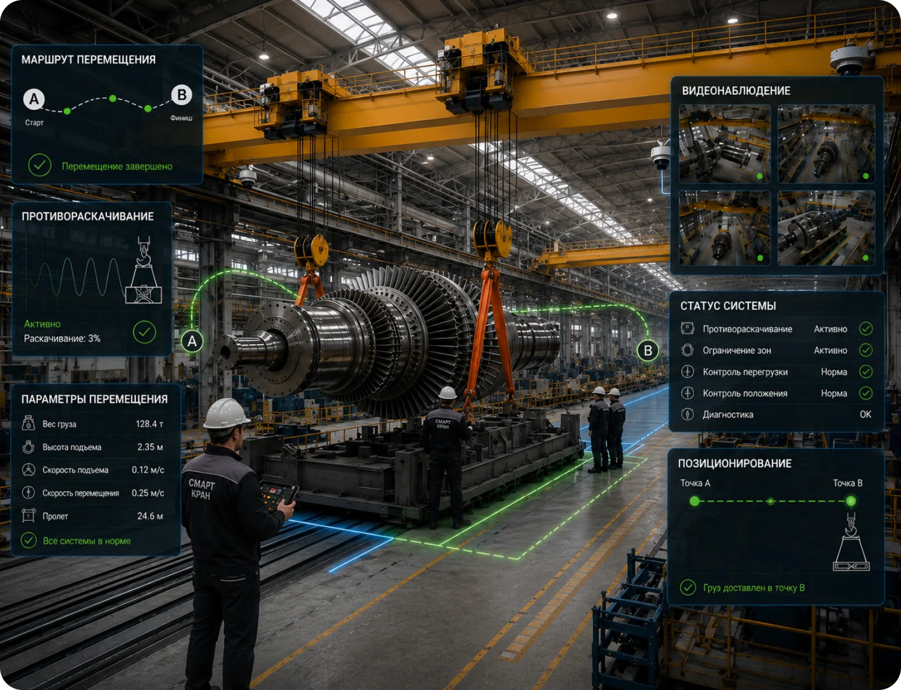
Автоматически компенсирует колебания груза
при разгоне, торможении и позиционировании,
повышая точность перемещения и
производительность грузоподъемных операций.
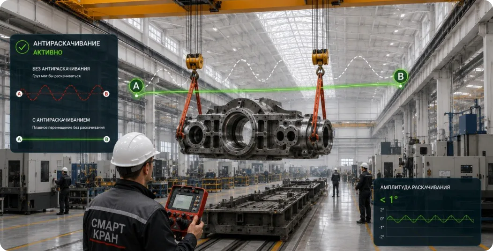
Обеспечивает автоматическое перемещение груза в заданную
координату с высокой точностью, сокращая время рабочих циклов
и снижая влияние человеческого фактора.
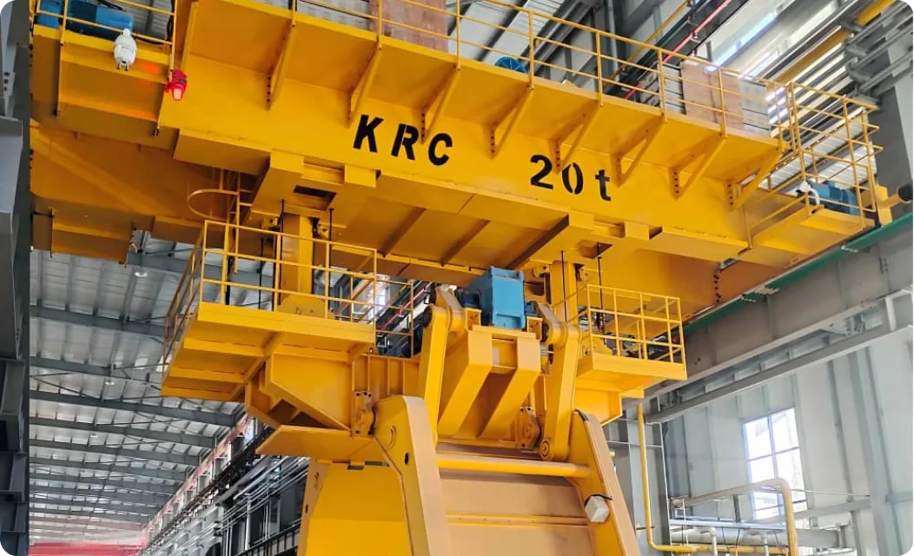
Контролирует расстояние между кранами
и препятствиями, автоматически
предотвращая опасные сближения
и обеспечивая безопасную эксплуатацию
оборудования.
Непрерывно контролирует техническое
состояние оборудования, регистрирует
параметры работы механизмов
и обеспечивает основу для предиктивного
технического обслуживания.
Формирует виртуальные рабочие зоны
и автоматически ограничивает движение
механизмов при попытке выхода за
установленные границы эксплуатации.
Позволяет управлять краном из удаленной операторской с использованием видеонаблюдения и PLC-автоматизации, повышая безопасность и комфорт работы.
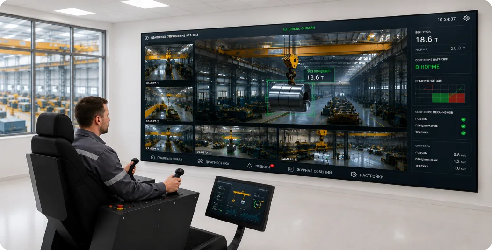
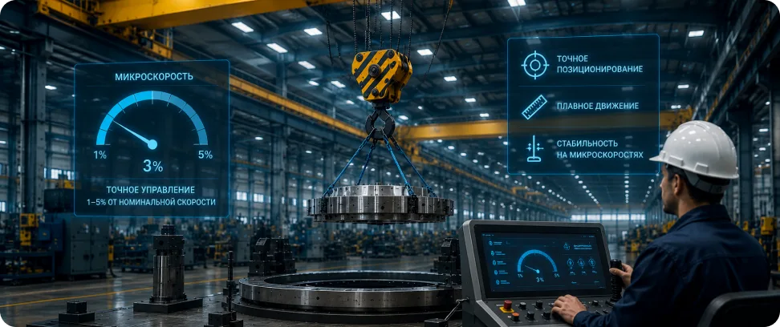
Точное управление механизмами на скоростях 1–5% от номинальной для выполнения монтажных, сборочных и высокоточных технологических операций.
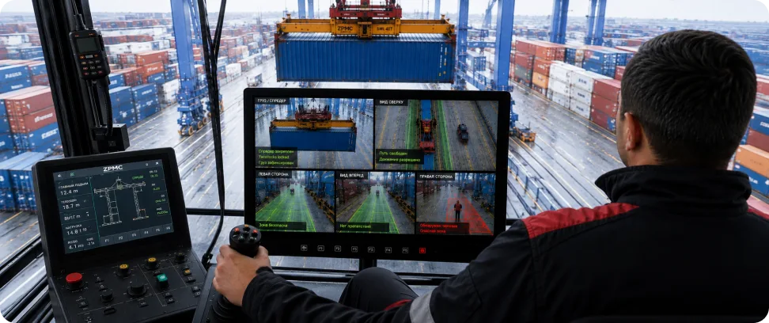
Промышленные IP-камеры обеспечивают визуальный контроль рабочей зоны, удаленное наблюдение за грузовыми операциями и запись событий.
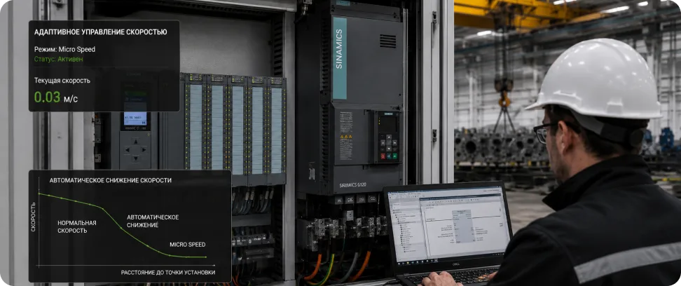
Автоматически изменяет скорость движения механизмов в зависимости от массы груза, положения тележки и технологического режима работы.
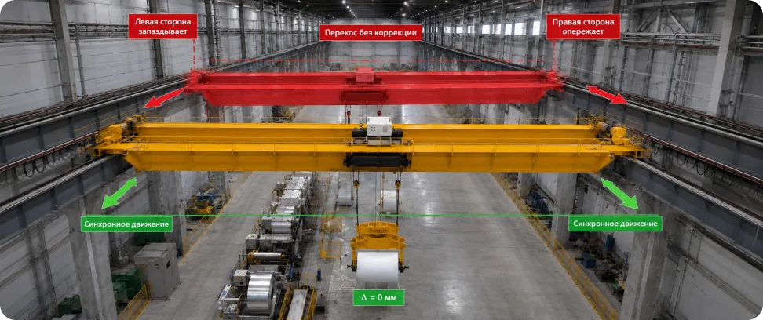
Контролирует синхронность движения приводов, предотвращает перекос моста крана и снижает нагрузку на ходовые колеса, металлоконструкции и подкрановые пути.
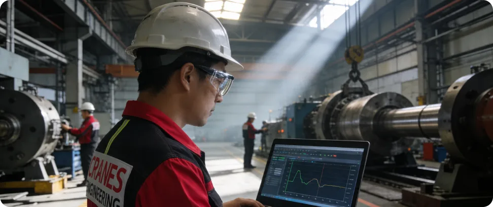
Непрерывно анализирует параметры работы механизмов, выявляет признаки износа оборудования и предупреждает о возможных отказах до возникновения неисправностей.
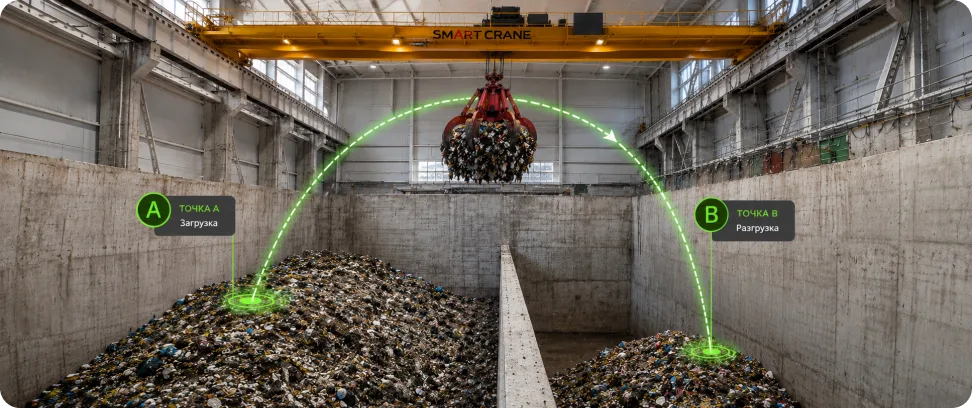
Автоматически перемещает груз в заданные координаты с высокой точностью, сокращая продолжительность рабочих циклов и исключая ошибки оператора.
Система противораскачивания использует математические модели для активного подавления колебаний груза.
Интеллектуальная система Smart Crane обеспечивает максимальный эффект на предприятиях с высокой интенсивностью грузоподъемных операций, где предъявляются повышенные требования к производительности, безопасности и точности позиционирования грузов.
Монтаж оборудования, автоматизированные производственные линии, складские
и логистические комплексы.
Транспортировка ковшей, рулонов, длинномерных конструкций, контейнеров и других дорогостоящих грузов.
Внедрение технологий Industry 4.0, удаленного управления, промышленной автоматизации и интеллектуального мониторинга оборудования.
Многосменная работа, высокая загрузка и большое количество рабочих циклов.
Совместная работа нескольких кранов, оборудования и производственного персонала.
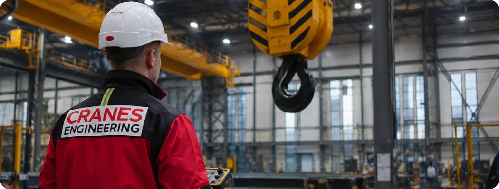
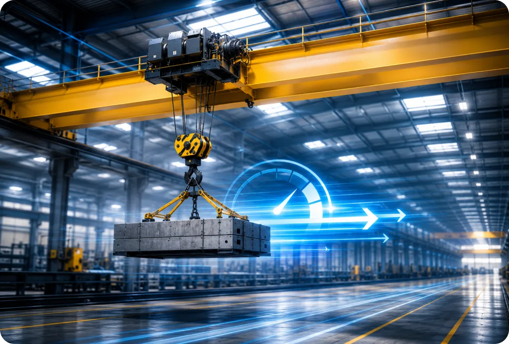
Сокращение времени рабочих циклов, уменьшение раскачивания груза, повышение скорости точного позиционирования и снижение количества повторных операций. Исследования и промышленные проекты показывают сокращение времени цикла примерно на 20–25%, а в отдельных сценариях — существенно больше.
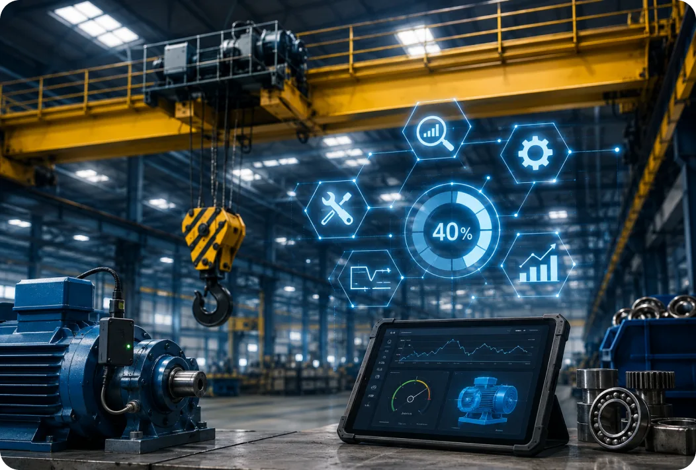
Переход от планового ремонта к обслуживанию
по фактическому состоянию оборудования, раннее обнаружение неисправностей, сокращение аварийных ремонтов и оптимизация запасов запасных частей.
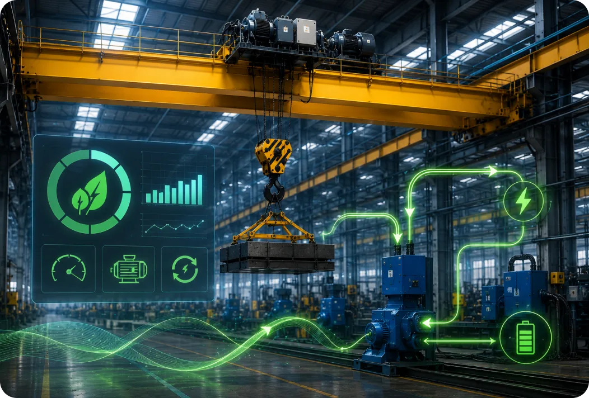
Оптимизация алгоритмов движения, применение частотного регулирования, сокращение холостых перемещений, использование рекуперации энергии при торможении (при наличии соответствующего оборудования).
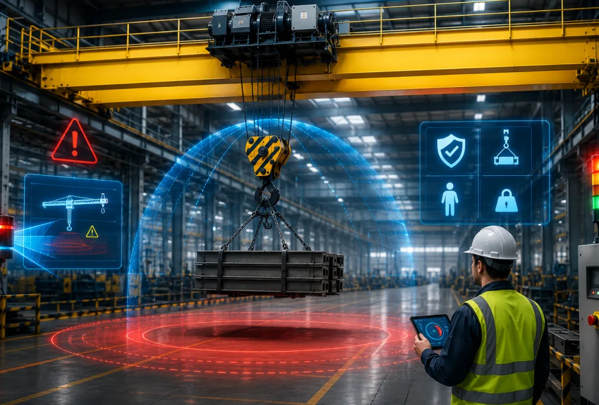
Автоматическое предотвращение столкновений, контроль опасных зон, снижение человеческого фактора и защита оборудования от перегрузок и ошибок оператора.
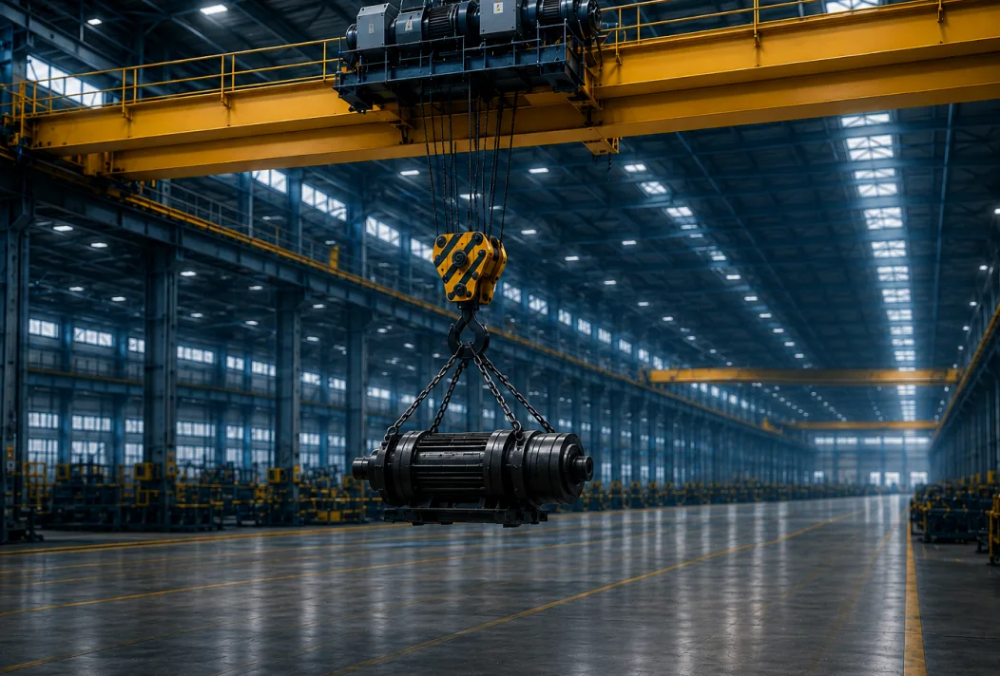
Плавное управление механизмами, снижение динамических нагрузок, уменьшение ударных режимов работы, контроль перегрузок и постоянный мониторинг технического состояния.
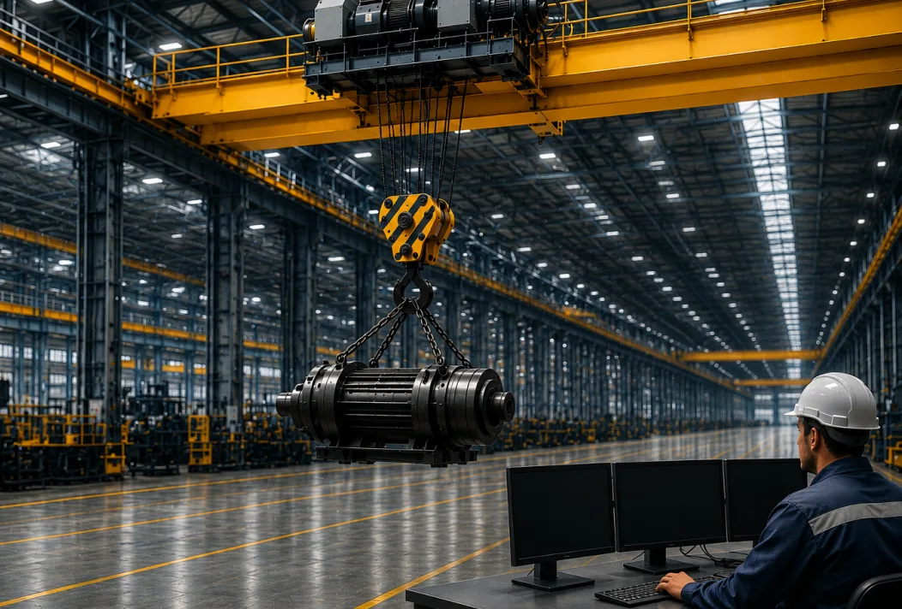
Непрерывный мониторинг состояния механизмов, прогнозирование отказов, сокращение внеплановых простоев и увеличение времени готовности оборудования к работе. Практические проекты показывают рост доступности оборудования примерно с 92% до 98% при внедрении предиктивного обслуживания.
Крейнс Инжиниринг ваш проводник в мир новых технологий. Проводим полный технический аудит, составляем план модернизации и рекомендуем оптимальный набор опций.
Анализ состояния крана,
режимов работы и возможностей
для автоматизации.
Выбор интеллектуальных опций с учетом задач производства и особенностей эксплуатации.
Разработка технического задания,
схем интеграции, программного
обеспечения.
Закупка PLC-контроллеров, частотных преобразователей и систем видеонаблюдения.
Установка датчиков, камер, контроллеров, прокладка сетей, интеграция с системой.
Написание управляющих программ, калибровка датчиков, настройка параметров защит.
Испытания всех функций,
отладка алгоритмов, обучение
операторов и персонала.
Наличие запасных частей, комплектующих позволяет обеспечить минимальные сроки ремонта, сборки, модернизации ГПМ.
Наши сотрудники имеют профильное образование, регулярно проходят дополнительное обучение и повышают квалификацию.
Стоимость работ рассчитывается нашими специалистами индивидуально, позволяя нашим клиентам грамотно распределять бюджет и экономить.
Подбираем оптимальные решения по модернизации с учетом особенностей объекта и условий эксплуатации.
1000+
Реализованных проектов для промышленных предприятий
50 000+
Часов технического обслуживания в год
24/7
Техническая поддержка и выезд на объект
100%
Кранов соответствуют ГОСТ
и ТУ после модернизации
За годы работы мы реализовали десятки проектов по модернизации кранового оборудования.

Выполнили комплексное обновление оборудования: замену ключевых узлов, модернизацию системы управления и пусконаладочные работы.
Результат:
Решение позволило повысить надежность эксплуатации и продлить срок службы крана.
Смотреть кейс подробнее
Провели восстановление основных механизмов и замену изношенных компонентов грузовой тележки.
Результат:
Оборудование подготовлено к дальнейшей безопасной и эффективной эксплуатации.
Смотреть кейс подробнееНаши сервисные бригады выезжают на объекты по всей стране и гарантируют надежность и бесперебойную работу кранов вне зависимости от расстояния.
40+
регионов России, где мы обслуживаем крановое оборудование
В зависимости от поставленной задачи, подберем для вас сервисную программу обслуживания грузоподъемной техники или предоставим требуемую услугу отдельно.
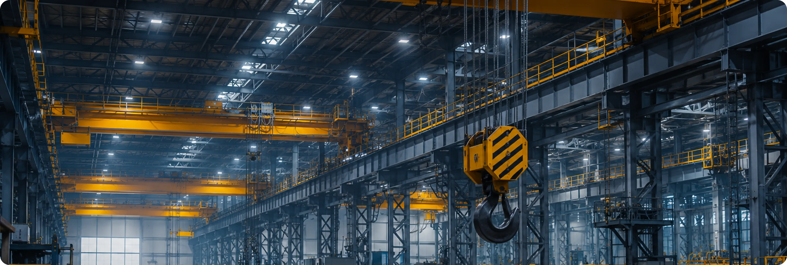
При выполнении технического обслуживания, ремонта, модернизации у нас диагностика проводится БЕСПЛАТНО — ее стоимость полностью засчитывается в счет будущих работ
Функция Micro Speed обеспечивает высокоточное управление всеми механизмами крана при выполнении ответственных технологических операций. Скорость перемещения автоматически снижается до 1–5% от номинальной, позволяя точно позиционировать груз без рывков и дополнительных корректировок.
Режим микроскорости применяется при монтажных, сборочных и наладочных работах, где требуется максимальная точность перемещения. Повышает безопасность операций, снижает риск повреждения оборудования и облегчает выполнение сложных манипуляций.
Промышленная система видеонаблюдения обеспечивает непрерывный визуальный контроль рабочей зоны, механизмов крана и перемещения груза. Изображение передается оператору в режиме реального времени с возможностью записи и хранения событий.
Система повышает безопасность эксплуатации, улучшает обзор ограниченных зон и поддерживает удаленное управление оборудованием. Позволяет анализировать технологические операции, расследовать инциденты и контролировать работу крана без нахождения в опасной зоне.
Система автоматически регулирует скорость механизмов в зависимости от массы груза, положения тележки, режима работы и технологической операции. Алгоритмы управления обеспечивают плавное ускорение и торможение без динамических перегрузок.
Интеллектуальное управление сокращает продолжительность рабочих циклов и снижает механические нагрузки на оборудование. Повышает производительность крана, увеличивает ресурс механизмов и обеспечивает стабильность технологического процесса.
Система антиперекоса обеспечивает синхронное движение приводов моста крана и непрерывно контролирует положение концевых балок относительно подкрановых путей. При возникновении отклонения система автоматически корректирует скорость электродвигателей, предотвращая боковое смещение, заклинивание и повышенный износ ходовых колёс.
Функция особенно эффективна для кранов с большим пролётом, раздельным приводом и высокой интенсивностью эксплуатации. Снижает динамические нагрузки на металлоконструкции и подкрановые пути, повышает плавность движения и увеличивает ресурс механического оборудования.
Система непрерывно анализирует параметры работы электроприводов, редукторов, тормозов и других механизмов, выявляя признаки износа и отклонения рабочих характеристик до возникновения отказов оборудования.
Полученные данные используются для планирования технического обслуживания по фактическому состоянию оборудования. Сокращает внеплановые простои, снижает затраты на ремонт и повышает коэффициент технической готовности крана.
Интеллектуальная система автоматически перемещает груз в заранее заданные координаты с высокой точностью, используя данные датчиков положения и алгоритмы PLC-управления. Оператор контролирует процесс без необходимости ручной корректировки движения.
Функция сокращает время выполнения повторяющихся операций и исключает влияние человеческого фактора. Повышает точность позиционирования, производительность грузоподъемных операций и стабильность технологического процесса.
Оставьте номер — перезвоним в рабочее время, ПН-ПТ 09:00-18:00.